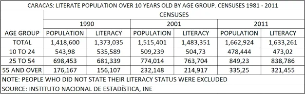

Discover
Literacy Demographic
Literate population statistics are immensely beneficial for us as they provide a crucial foundation for informed decision-making and strategic planning. Understanding the literacy levels within a region helps us tailor our outreach and support programs to the specific educational needs of the community. A higher literacy rate often correlates with a more skilled and adaptable workforce, which can attract businesses seeking a qualified labor pool. Moreover, literate populations tend to have better access to information and technology, fostering entrepreneurship and innovation. This data also aids in advocating for educational initiatives, attracting investments, and creating an environment conducive to economic growth, ultimately benefiting both chamber members and the entire local business ecosystem.
Tourist Attractions
Caracas, the capital city of Venezuela, offers a variety of attractions for both residents and visitors to explore. While the city has faced challenges in recent years, it still boasts cultural, historical, and natural sites worth experiencing.
Here are some attractions in Caracas:
- El Ávila National Park (Waraira Repano National Park): This sprawling national park, which surrounds the city, offers hiking trails, scenic viewpoints, and a cable car ride (Teleférico de Caracas) with breathtaking panoramic views of Caracas and the Caribbean Sea.
- Plaza Bolívar: Located in the heart of Caracas, Plaza Bolívar is a historic square surrounded by important government buildings and monuments, including a statue of Simón Bolívar, a key figure in Venezuela's fight for independence.
- Museum of Fine Arts (Museo de Bellas Artes): Home to an extensive collection of Venezuelan and international art, this museum showcases a wide range of artistic styles and periods.
- Teresa Carreño Cultural Complex (Complejo Cultural Teresa Carreño): A significant cultural hub in Caracas, this complex hosts a variety of performances, including ballet, theater, and classical music concerts.
- Parque del Este (East Park): This lush urban park provides a serene escape from the bustling city. It's an ideal spot for picnics, jogging, or simply enjoying the outdoors.
- Caracas Cathedral (Catedral de Caracas): This historic cathedral, built in the 17th century, is an architectural marvel with a stunning interior.
Upcoming Events
The upcoming Business Expo by the Caracas Chamber of Commerce, on October 25th at 7:00 pm, aims to boost local businesses by providing a platform for promotion and networking. This event fosters economic growth, knowledge sharing, and community engagement while enhancing the chamber's reputation as a vital resource for businesses in the Caracas area.
Venezuelan Holidays Calendar